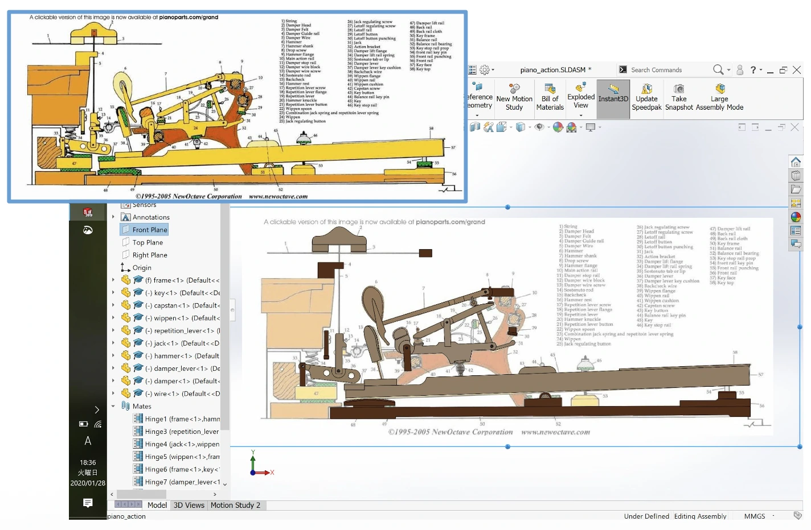
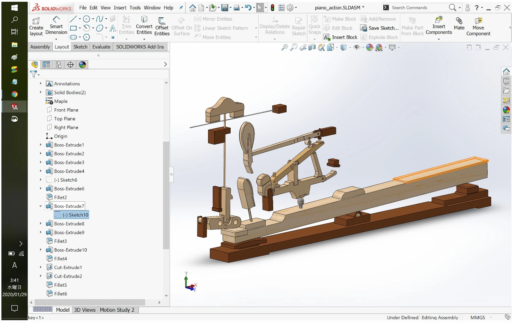
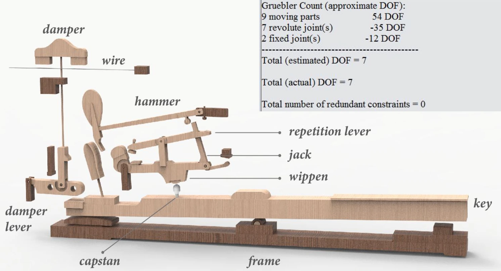
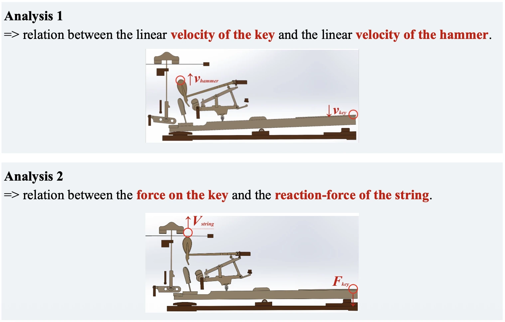
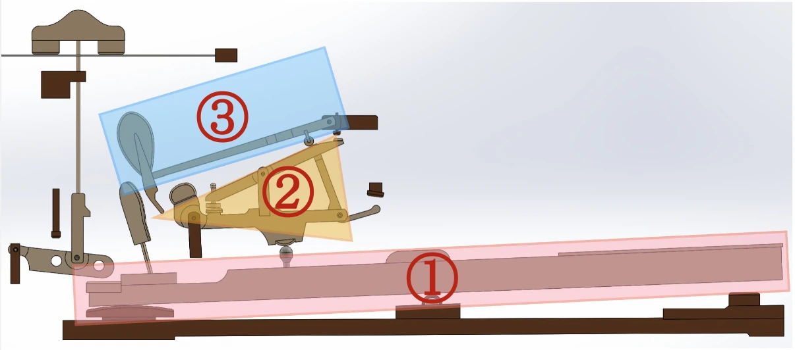
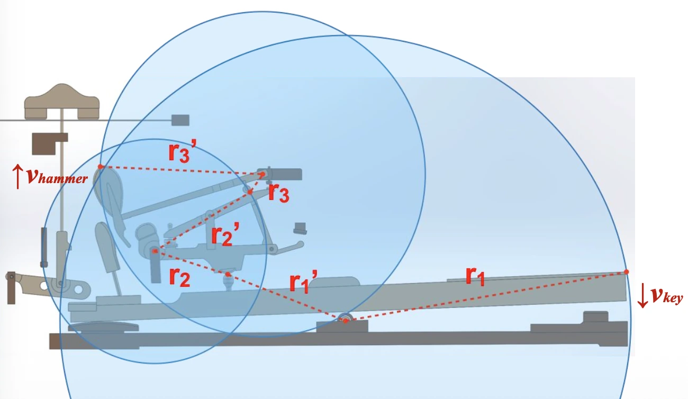
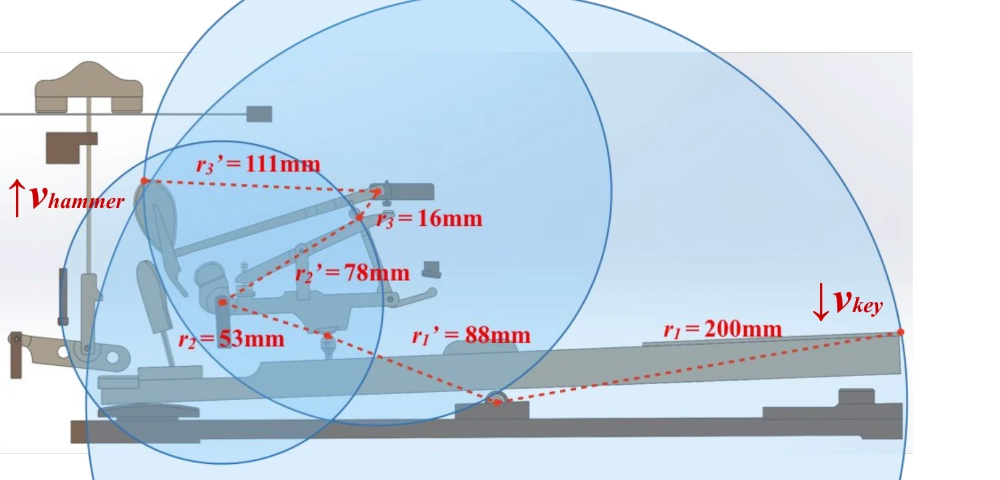
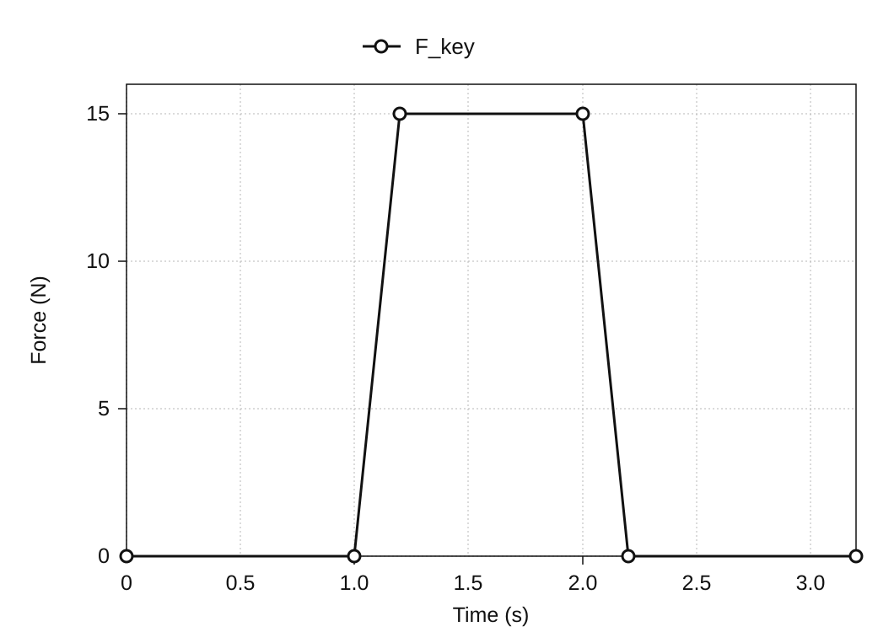
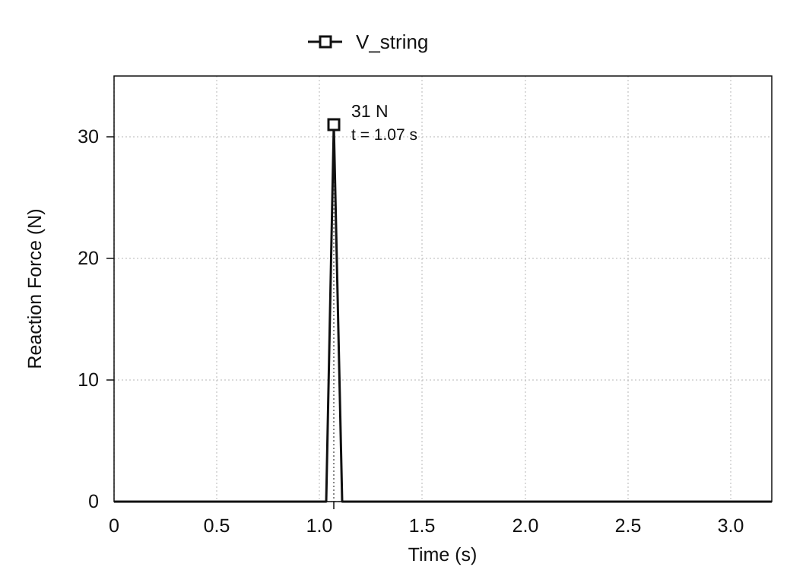
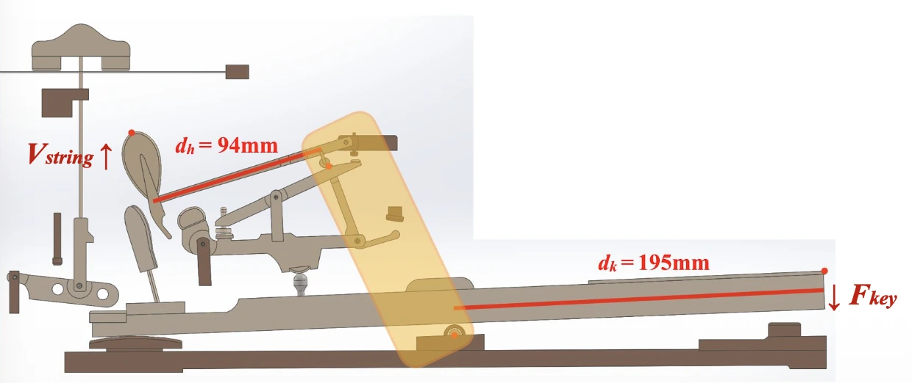

钢琴击弦机的运动分析
2020年1月
概述
在三角钢琴内部，按下琴键的动作经由多重连杆逐级传递，最终使琴槌向上弹起，转化为琴弦的振动。这套让琴键被按下时能够带动琴槌击弦的杠杆系统，称为「击弦机」。本项目在SolidWorks*上把这套击弦机重建为3D模型，并用运动分析考察琴键上的输入如何转化为琴槌的速度和琴弦的反作用力。
分析之前，先依据参考图片从零开始对琴键机构做了3D建模，再用这个模型进行了两项运动分析：一项是下沉的琴键与弹起的琴槌之间的速度关系，另一项是施加在琴键上的力与作用到琴弦上的力之间的关系。3D模型上得到的仿真数值，与依据尺寸和支点位置推算出的理论值相互对照，以确认运动与力在模型内部是怎样传递的。
* SolidWorks：3D CAD系统。在设计阶段即可进行考察零件强度的结构分析，以及确认运动情况的运动分析。
{kind=link}
{kind=link}
{kind=link}
{kind=link}
{kind=link}
{kind=link}
{kind=link}
{kind=link}
{kind=link}
{kind=link}
{kind=link}
{kind=link}
{kind=link}
{kind=link}
{kind=link}
{kind=link}
{kind=link}
把击弦机做成可供分析的3D模型
把一次触键变成一次击弦的机构
击弦机是把琴键的向下运动转换为琴槌向上运动的机构。按下琴键后，顶杆螺钉、联动杆、击弦机顶杆、复振杠杆等随之联动，琴槌被抬起并击打琴弦。演奏者看到的只是一次触键，而在其内部，多个零件分别绕着不同的支点转动，在彼此接触中把运动传递下去。
3D建模包含了琴键、琴槌、顶杆、联动杆、复振杠杆、顶杆螺钉、制音器、制音杠杆、金属丝，以及支撑它们的框架。要理解其运动，仅仅端详成品的形状是不够的，还必须界定哪个零件以何处为支点转动、又触及下一个零件的哪个部位。
从剖面图做出3D模型
本项目没有采用现成的CAD数据，而是以击弦机的剖面资料为底图描摹各零件的轮廓，逐个建立3D模型。随后把零件组装为装配体，并设定与实际机构相对应的固定关系和转动关系。这道工序把一个供人观看形状的模型，变成了一个可以施力、可以运动的分析模型。


以自由度确认约束条件
除去固定的框架，可动零件共9个，若无约束则合计具有54个自由度。把顶杆螺钉与金属丝固定到其他零件上，减少12个自由度；再以转动副约束其余7个零件，又减少35个。因此，该CAD装配体的自由度为7，如下所示。
54 − 12 − 35 = 7
SolidWorks的约束诊断也显示，估计自由度与实际自由度均为7，冗余约束为0。这并不是断定实物击弦机整体自由度的数值，而是确认本项目所设定的零件构成与约束条件确实按预期装配完成。

两项分析——琴键输入如何被转换
模型的行为分两项分析来考察。分析1是「琴键运动的快慢如何转换为琴槌的快慢」，分析2是「施加在琴键上的力如何以琴弦一侧的反作用力呈现」。每次只截取一组输入与输出，就能把复杂连杆机构的行为，化为可用几何速度比与杠杆力平衡来说明的形式。
比较的基准，是把机构置换为简单转动构件后的理论计算。理论值与仿真值若相接近，至少可以判断模型内部的运动，符合由所设定的尺寸与约束条件所应当期待的关系。

分析1——琴键的速度在琴槌处被放大了多少
在速度分析中，把复杂的击弦机简化为琴键、以联动杆为中心的中间机构、琴槌这三个在接触中传递运动的刚体。把运动理解为依次从图中的①传到③，多零件构成的机构便可作三级转动来计算。

同一刚体上角速度相同，若以r表示到支点的距离、以v表示该点的线速度，则v = ωr。若假定接触点处速度无损耗地传向下一个刚体，把各级的输入半径与输出半径之比相乘，即可求得琴槌速度。
vhammer = (r1′ r2′ r3′ / r1 r2 r3) vkey

输入条件与观测结果
在SolidWorks Motion Analysis中，于琴键末端向下施加5 N，观测琴键末端与琴槌的线速度。开始施力后不久出现的峰值速度，琴键为1,027 mm/s，琴槌为4,284 mm/s。也就是说，在仿真中琴槌的速度约为琴键的4.17倍。
| 观测·计算对象 | 速度 |
|---|---|
| 琴键（仿真） | 1,027 mm/s |
| 琴槌（理论计算） | 4,614 mm/s |
| 琴槌（仿真） | 4,284 mm/s |
与理论值的比较
从模型上量得的半径为r1 = 200 mm、r1′ = 88 mm、r2 = 53 mm、r2′ = 78 mm、r3 = 16 mm、r3′ = 111 mm。代入公式后，理想化的速度比约为4.49倍，据此可预测：对应1,027 mm/s的琴键速度，琴槌速度应为4,614 mm/s。

仿真值4,284 mm/s虽比理论值低约7%，但速度被放大的幅度相当接近。产生这一差异的原因，如后文所述，在于把机构理想化为三个刚体的理论计算，与连零件间损耗和材料变形一并处理的3D仿真，二者前提不同。
分析2——琴键上的力在琴弦一侧如何呈现
第二项分析在琴键表面向下施加15 N，观测击弦时出现在琴弦一侧的反作用力。琴键一侧的输入Fkey自1.0秒起上升至15 N，而在击弦的瞬间，琴弦一侧的反作用力Vstring出现了最大31 N的峰值。


这一数值可由琴键一侧与琴槌一侧的力臂长度所构成的杠杆平衡来说明。
Vstring = (15 × 195) / 94 = 31.1 N
取输入点到支点的距离为195 mm、到琴弦一侧作用点的距离为94 mm来计算，理论值为31.1 N。与仿真最大值31 N相差0.1 N；在这项分析中，结果同样与由所设定尺寸应当期待的力的传递几乎一致。

仿真结果与理论值的对照
两项分析都得到了相近的结果
在比较琴键与琴槌速度的分析1中，相对于琴槌速度的理论值4,614 mm/s，3D仿真的结果为4,284 mm/s。在比较琴键输入与琴弦反作用力的分析2中，相对于理论值31.1 N，仿真的最大值为31 N。两项分析中，所建3D模型的仿真结果都与由公式求得的理论值相接近。
产生细微差异的原因
理论计算把击弦机简化为由三个刚体构成的机构，并按接触点处运动与力无损耗传递来计算。而3D模型的仿真要处理构成击弦机的每一个零件，因此零件之间的能量损耗与材料变形也会反映到结果之中。正是这一前提上的差别，表现为理论值与仿真值之间的细微差异。
结论
可以确认，3D仿真的结果与理论值几乎相等。依据剖面图建立的3D模型，以与理论计算相符的方式再现了击弦机的运动——把琴键的输入放大为琴槌的速度，并把这份力传向琴弦。
在这个项目中所做的，不只是复现形状。从剖面资料中读出结构、把零件之间的关系转译为CAD中的约束、再依所要分析的问题把它简化为力学模型，这些都作为同一个建模过程被贯通起来。